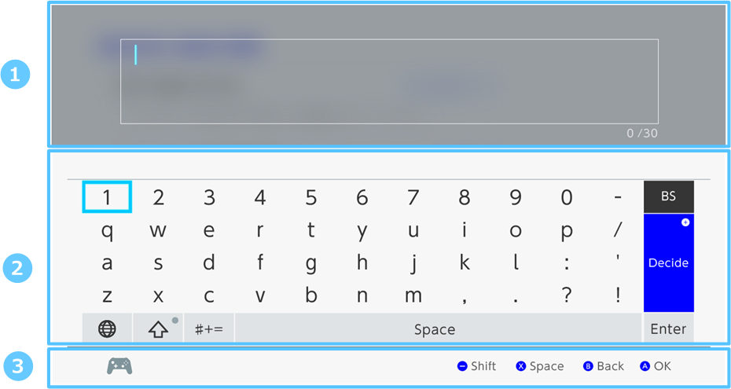

This applet is invoked by the application to allow users to enter their names, passwords, and other text when text input is required.
You can set parameters to, for example, enable and disable predictive text input or block the input of specific characters.
Note that the application must allocate the working memory, on the order of a few kilobytes, for this applet.
The NX does not support input methods like handheld input and hand-drawn input that were supported on devices such as the Wii U.
The screen is split into upper and lower halves. The upper half is a preview field where you preview the entered text. The lower half contains a keyboard that can be used for text entry, and a footer that displays a description of actions. The screen of the application that called the software keyboard applet appears in the background of the upper half.

| Number | Name | Description |
|---|---|---|
|
|
Preview Field | Shows the text that the player entered. |
|
|
Keyboard |
Appears as a layout of buttons that enable text entry. When predictive text input is enabled, a field will appear above the keyboard for displaying conversion candidates. |
|
|
Footer | Displays a guide for using controller buttons. |
You can easily customize the software keyboard by setting startup parameters.
You can configure the following parameters.
There are three types, or modes, of keyboards, classified by the types of characters that can be entered. The full mode is the default.
| Name | Description |
|---|---|
| Full Mode |
Not only can you enter commonly used alphanumeric characters, you can also enter a wide variety of symbols, kanji, and kana. The characters that can be entered are not dependent on the region and language settings because the player can change keyboard layouts as desired.However, the keyboard layout that will appear first depends on those region and language settings. |
| ASCII Mode | Only ASCII characters can be entered. |
| Numeric Mode | Only numbers can be entered. Parameters can be set, however, to enable input of two additional characters. |
Predictive text input can be enabled and disabled.
You can add user dictionaries, which are dictionaries created in the application, to the dictionary used for predictive text input.
You can also configure the software keyboard to not use dictionaries it normally would, and to use only user dictionaries instead.
Predictive text input learning occurs automatically by using the software keyboard. Applications cannot enable or disable this learning.
Learning data is saved for each user account. That data will continue to be available whenever the software keyboard is subsequently called.
Customers can delete learning data in the System Settings.
The ability to continue using learning data is only available when just one user is selected. Learning data is not used from one session to the next when no users are selected or when multiple users are selected.
You can use settings to block the input of the following types of characters.
Any characters other than the following are blocked. You cannot enter a capital O, I, or Z.
Characters that are not included in Appendix: Characters That Can Be Used in the User Account Nickname in the Account Guide are blocked. For more information, see the Account Guide.
You can use settings to enable or disable the ability to immediately hide player input.
We expect this feature to be enabled at times such as when entering passwords.
You can set whether players can include new lines within entered text.
You can use settings to configure the maximum number of characters that can be entered, and the minimum number of characters required for valid input.
Nintendo also plans to support input from USB hardware keyboards.
The text that can be entered varies based on keyboard type and whether predictive text input is enabled or disabled.
Note that all characters included among the NX system fonts, excluding Nintendo extended characters, can be entered when predictive text input is enabled.
The following list includes the available characters. That list is included with this package.
| Condition | Filename |
|---|---|
| When Predictive Text Input Is Enabled | NX_SWKBD_CodeList_Predictive_Func_Enable.xlsx |
|
When Predictive Text Input Is Disabled and the Keyboard Type Is Full Mode |
NX_SWKBD_CodeList_Full.xlsx |
| When Predictive Text Input Is Disabled and the Keyboard Type Is ASCII Mode | NX_SWKBD_CodeList_ASCII.xlsx |
The characters that can be entered are not dependent on the settings for region and language within the system settings.
It is possible to enter both kanji and Cyrillic text, for example, even when using the full mode keyboard type, and when the language is set to English in the System Settings.
CONFIDENTIAL